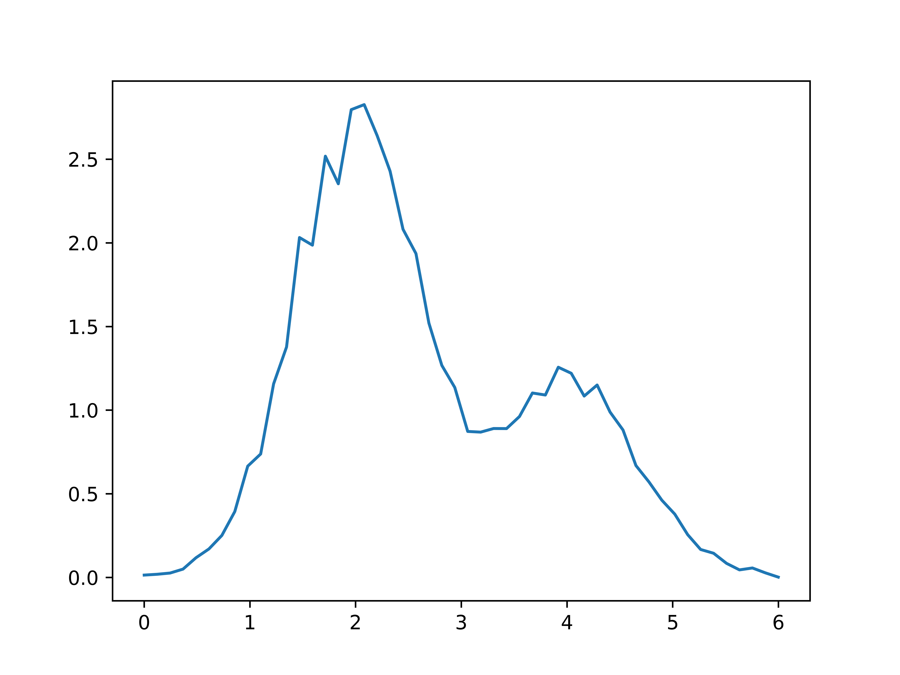
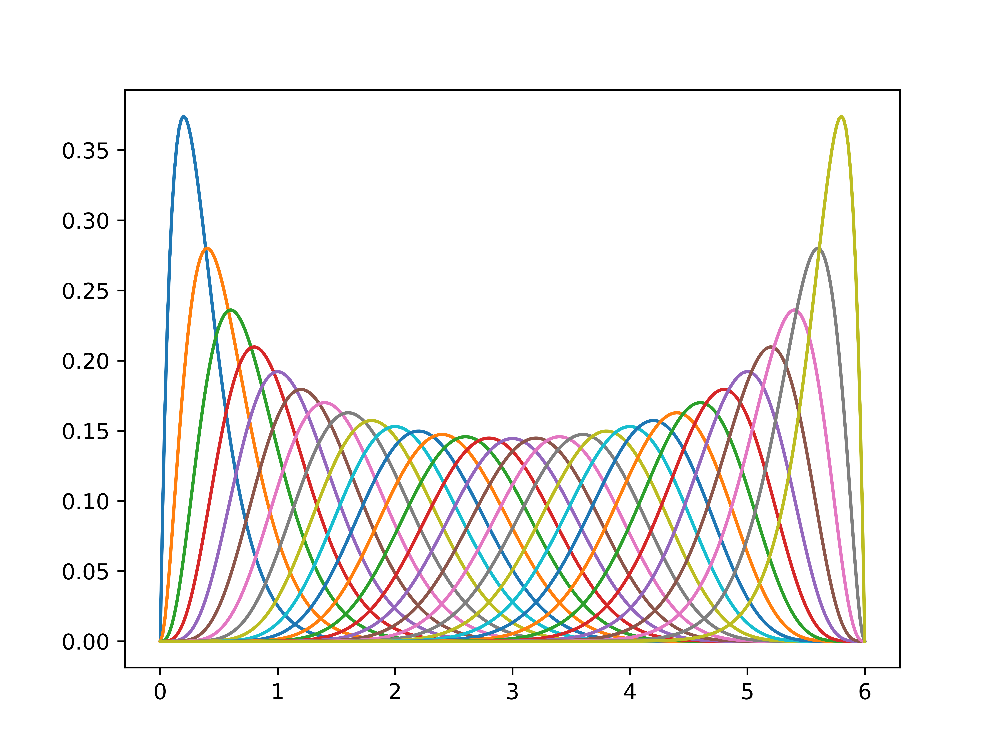
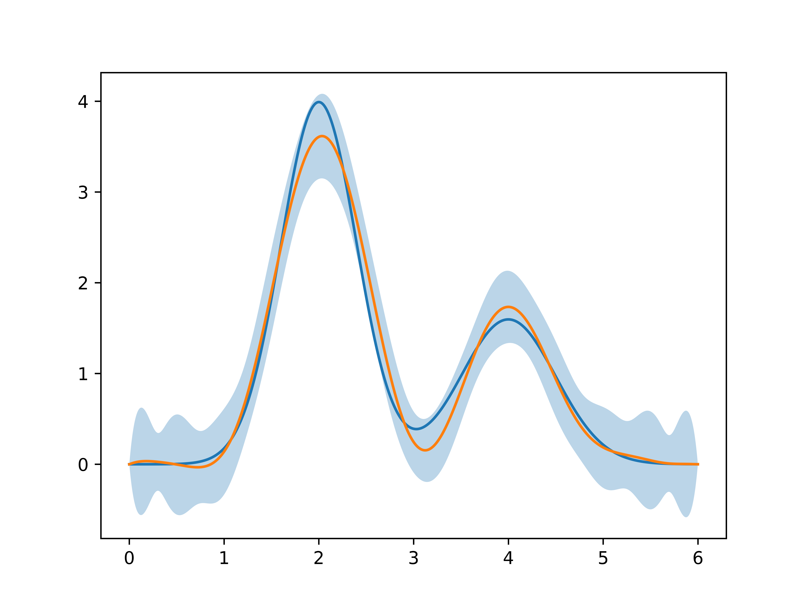

Examples
Reconstruction of the sum of two normal distributions with discrete kernel in basis of 30 cubic splines with zero boundary conditions.
- Define the function
using PyCall
include("src/gauss_error.jl")
include("src/kernels.jl")
a = 0.
b = 6.
function phi(x::Float64)
mu1 = 2.
mu2 = 4.
n1 = 4.
n2 = 2.
sig1 = 0.4
sig2 = 0.5
norm(n, mu, sig, x) = n / sqrt(2 * pi*sig^2) * exp(-(x - mu)^2 / (2 * sig^2))
return norm(n1, mu1, sig1, x) + norm(n2, mu2, sig2, x)
end
x = collect(range(a, stop=b, length=300))
using PyPlot
myplot = plot(x, phi.(x))
- Define kernel
function kernel(x::Float64, y::Float64)
return getOpticsKernels("gaussian")(x, y)
end- Integrate function multiplied by kernel and add noise
convolution = y -> quadgk(x -> kernel(x,y) * phi(x), a, b, maxevals=10^7)[1]
y = collect(range(a, stop = b, length=50))
ftrue = convolution.(y)
sig = 0.05*abs.(ftrue) +[0.01 for i = 1:Base.length(ftrue)]
using Compat, Random, Distributions
noise = []
for sigma in sig
n = rand(Normal(0., sigma), 1)[1]
push!(noise, n)
end
f = ftrue + noise
plot(y, f)
- Define basis
basis = BernsteinBasis(a, b, 30, "dirichlet")
for basis_function in basis.basis_functions
plot(x, basis_function.f.(x))
end
- Discretize kernel
Kmn = discretize_kernel(basis, kernel, y)- Model
- Solve
result = solve(model, Kmn, f, sig)- Result
phivec = PhiVec(result["coeff"], basis, result["sig"])
x = collect(range(a, stop=b, length=5000))
plot(x, phi.(x))
phi_reconstructed = call(phivec, x)
phi_reconstructed_errors = errors(phivec, x)
plot(x, call(phivec, x))
fill_between(x, phi_reconstructed - phi_reconstructed_errors, phi_reconstructed + phi_reconstructed_errors, alpha=0.3)
